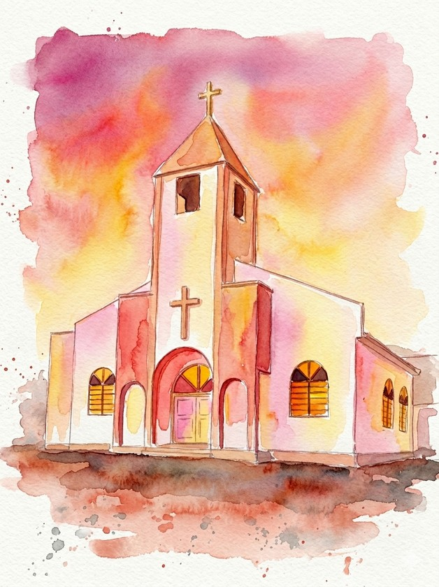

Manual dos
Padrinhos
Luiz e Thamiris
07 . 11 . 2026
Padrinhos
Um clássico que nunca erra: todos no mesmo traje, alinhados e elegantes ao nosso lado.
Madrinhas
Queremos vocês de rosa, vermelho
ou laranja! Não tem tom definido, nem tecido:
escolham o que fizer cada uma se sentir mais à vontade.
Rosa · Vermelho · Laranja
qualquer tom, qualquer tecido
Luiz e Thamiris
Obrigado por
estarem ao nosso lado
Ter vocês com a gente no altar é um presente.
Qualquer dúvida sobre o traje, é só chamar!
7 de novembro de 2026 · 4:30 PM
Igreja do Sertão do Rio Bonito
Braço do Norte
WhatsApp
(48) 99958-4582